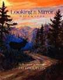

|
Urban Rancher Publishing
Estes Park, Colorado |
~ Looking in my Mirror Backwards
~
Reflections at Mid-Life
by Jay Grooters
Story Poems by the Urban RancherWith his characterization of "The Urban Rancher", Jay brings his poems about life on a guest ranch in the Colorado mountains and reflections on his life into story form. Using his quiet humor, he shares his journey of self-realization from past to present, and motivates his readers to look inward, discover, grow, and hopefully express themselves in a way they never have before. In the Introduction Jay says, "This collection of personal poetry reflects one person's journey of self-enlightenment as he moves through Mid-Life ... My goal is to entertain you, to touch you deep where you live, encourage you to look inward, discover, grow, and express yourself in a way you never have before." |
 |
| The Urban Rancher | ||
|---|---|---|
Deep within all of us, as we lead our busy city lives, is the urge to get away from it all
and return to the mountains, the farms, and the ranches, and lead the life of the Urban
Rancher.
|
It's
the dead of winter, and the Urban Rancher Is getting ready to go do his chores. 'Tis the crack of dawn, and he's rarin' to go, He's been pacing all over the floors.
He clears off the driveway, then off to the feeders
Finally, he comes to his pride and joy,
He's made his rounds, and filled up the bins, |
[Home] [Order Form]
Stained Glass by The
Urban Rancher
Sign My Guestbook View My Guestbook
Mountain Home Stained Glass
2148 McGraw Ranch Road
Estes Park, CO 80517
Mobile phone: 970-443-4536
E-mail:jaygrooters@frii.com
Copyright © 2009 Urban Rancher Publishing Revised - 17 September 2022